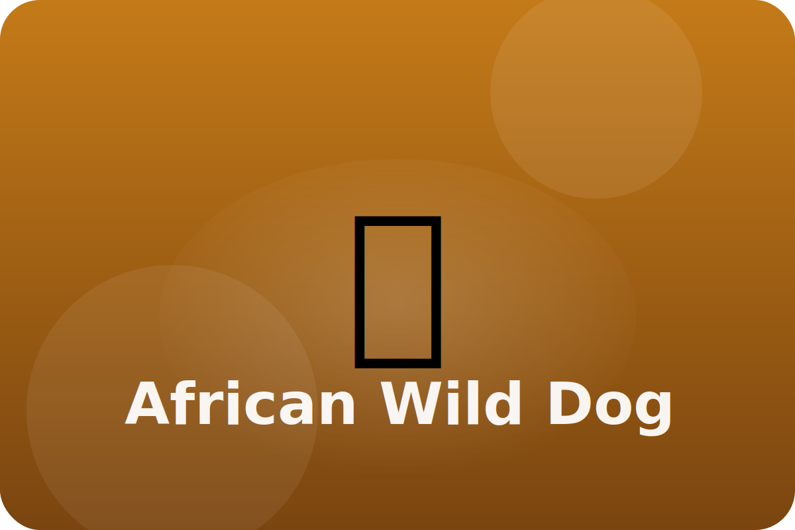

Savannah
Working together
African wild dogs live in tight packs. They share food, babysit pups, and help sick packmates.
Endurance Chase
Wild dogs run long distances to tire out prey, taking turns leading the chase.
Painted Coats
Each dog's coat has a unique pattern, helping packmates recognize each other.
Sharing Food
After a hunt, wild dogs regurgitate food so pups and older dogs can eat first.
Keep exploring the African Wild Dog
Watch the African Wild Dog in action
All About African Wild Dogs for Kids